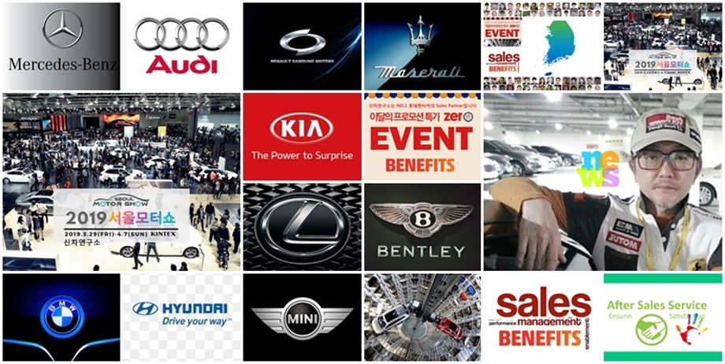

킴스연구소는(SNS컨덴츠연구소) 2017년9월에 설립되었으며
집단지성을 활용한
WEB,APP 개발 및 컨덴츠를 기획한다.

주요 섹션으로는 세금관련 절세 컨설팅 분야와 신차연구소
등이 있다.
또한 2022년 8월30일 런칭예정 중인 "투유"는 비즈니스 플
랫폼 형식의 모델로
킴스연구소의 신 성장 동력엔진으로 평
가 받을 예정이다.
집단지성을 기반으로한 비지니스 플램폼으로 매해 컨소시엄
을 구성하여 복잡한
세무행정 개선효과 및 절세라는 서비스
를 제시한다.
주요 고객군으로는 카마스터 직군으로 자사의 섹션인 신차연구
소의 차량구매
매칭서비스와 연계하는 인프라를 기반으로 한다.
향우 APP런칭 후 좀 더 다양한 직권을 타켓을 목표로 한다.
신차연구소는 테이터가공 및 제공의 성격을 띤다.
신차 및 중고차 구매를 위한 데이터를전국의 딜러사 또는 카마스터에
무상제공
된다.
후방 비즈니스 모델로는 차량의 외부수리 및 출장세차 분야의
데이터 제공를
유상 제공한다.
킴스연구소의 중장기 플랜으로써 현재 기획단계에 있으며
향후 다양한 업종의
클라이언트를 확보할 계획이다.
CRM,ERP등의 관리적 측면의 솔루션 도입을 적극 검토해야 함과
대외계 전산의
유연성을 구상하여야 한다